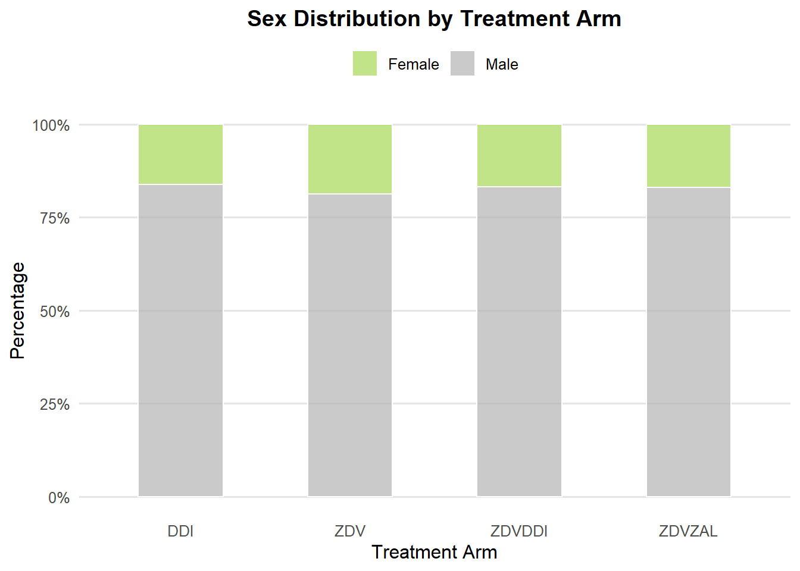
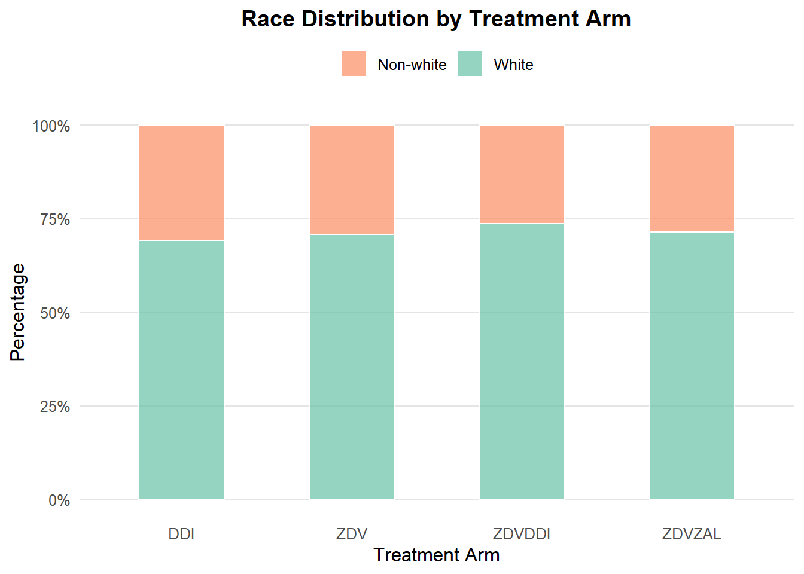

The SDTM (Study Data Tabulation Model) organizes clinical trial data into standardized domains, facilitating analysis and reporting. Each domain captures specific information about study participants, such as demographics, medical history, clinical assessments, and laboratory results.
Demographics (DM) domain
This domain contains basic participant information, as:
USUBJID: Unique subject identifier.
AGE: Participant’s age.
SEX: Sex (Male/Female).
RACE: Race (White/Non-white).
ARM / ARMCD: Treatment arm assigned.
To transform raw clinical data into a DM domain, the code was run as follows:
# load packageslibrary(tidyverse)library(lubridate) # Load aids dataset (obtained at Kaggle: https://www.kaggle.com/datasets/tanshihjen/aids-clinical-trials)aids_df <-read_csv("C:/Users/a282334/OneDrive - Syneos Health/Documents/R studies/20250902/AIDS_ClinicalTrial_GroupStudy175.csv")# The aids_df is a hypothetical clinical trial data set. So first, I'll adapt it to be similar to a SDTM, by doing derivationsdm <- aids_df %>% dplyr::mutate(STUDYID ="AIDS01", # fixed study identifierUSUBJID =paste0("SUBJ-", row_number()),AGE = age,SEX = dplyr::case_when( gender ==0~"F", gender ==1~"M",TRUE~NA ),RACE = dplyr::case_when( race ==0~"WHITE", race ==1~"NON-WHITE",TRUE~NA ),ARMCD = dplyr::case_when( trt ==0~"ZDV", trt ==1~"ZDVDDI", trt ==2~"ZDVZAL", trt ==3~"DDI",TRUE~NA ),ARM = dplyr::case_when( trt ==0~"Zidovudine (ZDV)", trt ==1~"Zidovudine (ZDV) + Didanosine (DDI)", trt ==2~"Zidovudine (ZDV) + Zalcitabine (ZAL)", trt ==3~"Didanosine (DDI)",TRUE~NA ),WEIGHTBL = wtkg ) %>% dplyr::select(STUDYID, USUBJID, AGE, SEX, RACE, ARMCD, ARM, WEIGHTBL)# Save as CSV in your working directorywrite.csv(dm, "dm.csv", row.names =FALSE)head(dm, 6)
# A tibble: 6 × 8
STUDYID USUBJID AGE SEX RACE ARMCD ARM WEIGHTBL
<chr> <chr> <dbl> <chr> <chr> <chr> <chr> <dbl>
1 AIDS01 SUBJ-1 48 F WHITE ZDVZAL Zidovudine (ZDV) + Zalcitab… 89.8
2 AIDS01 SUBJ-2 61 F WHITE DDI Didanosine (DDI) 49.4
3 AIDS01 SUBJ-3 45 M WHITE DDI Didanosine (DDI) 88.5
4 AIDS01 SUBJ-4 47 M WHITE DDI Didanosine (DDI) 85.3
5 AIDS01 SUBJ-5 43 M WHITE ZDV Zidovudine (ZDV) 66.7
6 AIDS01 SUBJ-6 46 M WHITE ZDVDDI Zidovudine (ZDV) + Didanosi… 88.9
Medical History (MH) domain
This domain captures key medical conditions and patient history prior to study start, as:
MHDECOD: Standardized medical condition term (e.g., Hemophilia).
MHTERM: Specific medical history description.
MHSTRESC: Recorded status (Yes/No/Unknown).
To transform raw clinical data into a MH domain, the code was run as follows:
# Hemophilia derivationmh_hemo <- aids_df %>% dplyr::mutate(STUDYID ="AIDS01", # fixed study identifierUSUBJID =paste0("SUBJ-", row_number()),MHDECOD ="HEMOPHILIA",MHTERM ="History of Hemophilia",MHSTRESC = dplyr::case_when( hemo ==0~"N", hemo ==1~"Y",TRUE~NA), ) %>% dplyr::select(STUDYID, USUBJID, MHDECOD, MHTERM, MHSTRESC)# Sexual orientation derivationmh_sex <- aids_df %>% dplyr::mutate(STUDYID ="AIDS01", # fixed study identifierUSUBJID =paste0("SUBJ-", row_number()),MHDECOD ="HOMOSEXUAL ACTIVITY",MHTERM ="History of Homosexual Activity",MHSTRESC = dplyr::case_when( homo ==0~"N", hemo ==1~"Y",TRUE~"Unknown"), ) %>% dplyr::select(STUDYID, USUBJID, MHDECOD, MHTERM, MHSTRESC)# History of IV drug use derivationmh_drugs <- aids_df %>% dplyr::mutate(STUDYID ="AIDS01", # fixed study identifierUSUBJID =paste0("SUBJ-", row_number()),MHDECOD ="INTRAVENOUS DRUG USE",MHTERM ="History of IV Drug Use",MHSTRESC = dplyr::case_when( drugs ==0~"N", drugs ==1~"Y",TRUE~NA), ) %>% dplyr::select(STUDYID, USUBJID, MHDECOD, MHTERM, MHSTRESC)# History of non-ZDV antiretroviral therapy prior clinical trialmh_nzdv <- aids_df %>% dplyr::mutate(STUDYID ="AIDS01", # fixed study identifierUSUBJID =paste0("SUBJ-", row_number()),MHDECOD ="NON-ZDV ANTIRETROVIRAL THERAPY",MHTERM ="History of non-ZDV antiretroviral therapy",MHSTRESC = dplyr::case_when( drugs ==0~"N", drugs ==1~"Y",TRUE~NA), ) %>% dplyr::select(STUDYID, USUBJID, MHDECOD, MHTERM, MHSTRESC)# History of ZDV therapy prior clinical trialmh_zdv30 <- aids_df %>% dplyr::mutate(STUDYID ="AIDS01", # fixed study identifierUSUBJID =paste0("SUBJ-", row_number()),MHDECOD ="ZDV IN 30 DAYS PRIOR",MHTERM ="Zidovudine (ZDV) therapy in 30 days prior to baseline",MHSTRESC = dplyr::case_when( drugs ==0~"N", drugs ==1~"Y",TRUE~NA), ) %>% dplyr::select(STUDYID, USUBJID, MHDECOD, MHTERM, MHSTRESC)# History of ZDV therapy prior clinical trialmh_zdv <- aids_df %>% dplyr::mutate(STUDYID ="AIDS01", # fixed study identifierUSUBJID =paste0("SUBJ-", row_number()),MHDECOD ="ZDV PRIOR",MHTERM ="History of prior Zidovudine (ZDV) therapy",MHSTRESC = dplyr::case_when( drugs ==0~"N", drugs ==1~"Y",TRUE~NA), ) %>% dplyr::select(STUDYID, USUBJID, MHDECOD, MHTERM, MHSTRESC)# bind to create a unique domainmh <-rbind(mh_drugs, mh_hemo, mh_nzdv, mh_sex, mh_zdv30, mh_zdv)# Save as CSV in your working directorywrite.csv(mh, "mh.csv", row.names =FALSE)head(mh, 6)
# A tibble: 6 × 5
STUDYID USUBJID MHDECOD MHTERM MHSTRESC
<chr> <chr> <chr> <chr> <chr>
1 AIDS01 SUBJ-1 INTRAVENOUS DRUG USE History of IV Drug Use N
2 AIDS01 SUBJ-2 INTRAVENOUS DRUG USE History of IV Drug Use N
3 AIDS01 SUBJ-3 INTRAVENOUS DRUG USE History of IV Drug Use Y
4 AIDS01 SUBJ-4 INTRAVENOUS DRUG USE History of IV Drug Use N
5 AIDS01 SUBJ-5 INTRAVENOUS DRUG USE History of IV Drug Use N
6 AIDS01 SUBJ-6 INTRAVENOUS DRUG USE History of IV Drug Use Y
Subject Characteristics (SC) domain
This domain includes baseline assessments and clinical observations, as:
SCTESTCD: Short code for the assessment (e.g., KARNOFSKY, SYMPTOM).
SCORRES: Result of the assessment (numerical or coded).
SCSTRESC: Categorical result (e.g., Asymptomatic, Symptomatic).
SCCAT: Category of measurement (e.g., Baseline Status, Clinical Status).
VISIT: Study visit timepoint.
To transform raw clinical data into a SC domain, the code was run as follows:
The ADaM (Analysis Data Model) standard was developed by CDISC to structure clinical trial datasets for statistical analysis. ADaM datasets are derived from SDTM and organized to facilitate statistical programming, as well as the creation of tables, listings, and graphs (TLGs) - more details below. They follow strict rules for traceability, ensuring that every variable can be linked back to its source in SDTM.
Subject-Level Analysis Dataset (ADSL)
ADSL contains one record per subject and provides key demographic and treatment information that serves as the foundation for most analyses. Its main characteristics include:
Structure: one record per subject.
Key variables: STUDYID, USUBJID, AGE, SEX, RACE, ARM, and ACTARM.
Includes treatment start and end dates, discontinuation status, and other derived variables useful for subgroup analyses.
To manually construct ADSL data using SDTM domains, the code was run as follows:
# Load packageslibrary(tidyverse)# Load SDTM domainsdm <-read.csv("dm.csv")mh <-read.csv("mh.csv")sc <-read.csv("sc.csv")ex <-read.csv("ex.csv")lb <-read.csv("lb.csv")# -------------------------------------------------------------------------------------------# Start from DM (1 line per subject guaranteed)adsl <- dm %>%# Merge with SC for baseline Karnofsky and symptomsleft_join( sc %>%filter(SCTESTCD =="KARNOFSKY", VISIT =="Baseline") %>%select(USUBJID, SCORRES) %>%rename(KARNOF = SCORRES),by ="USUBJID" ) %>%left_join( sc %>%filter(SCTESTCD =="SYMPTOM", VISIT =="Baseline") %>%select(USUBJID, SCSTRESC) %>%rename(SYMPTOM = SCSTRESC),by ="USUBJID" ) %>%# Merge with MH for key medical historyleft_join( mh %>%filter(MHDECOD =="HEMOPHILIA") %>%select(USUBJID, MHSTRESC) %>%rename(HEMO = MHSTRESC),by ="USUBJID" ) %>%left_join( mh %>%filter(MHDECOD =="INTRAVENOUS DRUG USE") %>%select(USUBJID, MHSTRESC) %>%rename(IVDRUG = MHSTRESC),by ="USUBJID" ) %>%mutate(STUDYID ="AIDS01",TRTSDT =as.Date("2025-01-01"), # treatment start dateTRTEDT =as.Date("2025-12-01") # treatment end date )# Save ADSLwrite.csv(adsl, "adsl.csv", row.names =FALSE)# Previewhead(adsl)
STUDYID USUBJID AGE SEX RACE ARMCD ARM
1 AIDS01 SUBJ-1 48 F WHITE ZDVZAL Zidovudine (ZDV) + Zalcitabine (ZAL)
2 AIDS01 SUBJ-2 61 F WHITE DDI Didanosine (DDI)
3 AIDS01 SUBJ-3 45 M WHITE DDI Didanosine (DDI)
4 AIDS01 SUBJ-4 47 M WHITE DDI Didanosine (DDI)
5 AIDS01 SUBJ-5 43 M WHITE ZDV Zidovudine (ZDV)
6 AIDS01 SUBJ-6 46 M WHITE ZDVDDI Zidovudine (ZDV) + Didanosine (DDI)
WEIGHTBL KARNOF SYMPTOM HEMO IVDRUG TRTSDT TRTEDT
1 89.8128 100 Asymptomatic N N 2025-01-01 2025-12-01
2 49.4424 90 Asymptomatic N N 2025-01-01 2025-12-01
3 88.4520 90 Asymptomatic N Y 2025-01-01 2025-12-01
4 85.2768 100 Asymptomatic N N 2025-01-01 2025-12-01
5 66.6792 100 Asymptomatic N N 2025-01-01 2025-12-01
6 88.9056 100 Asymptomatic N Y 2025-01-01 2025-12-01
Laboratory Results Analysis Dataset (ADLB)
ADLB is the dataset for laboratory test results. It contains repeated measures per subject across study visits, enabling assessment of trends, changes, and treatment-related effects. Its main characteristics include: - Structure: one record per subject per laboratory parameter per visit. - Key variables: STUDYID, USUBJID, PARAM, AVISIT, AVAL(numeric result), BASE, and CHG (change from baseline). - Supports analyses such as mean comparisons between treatment arms, evaluation of clinically relevant changes, and categorization of results outside reference ranges.
To manually construct ADLB data using SDTM domains, the code was run as follows:
Tables, Listings, and Graphs (TLGs) are the final outputs generated from ADaM datasets to support clinical trial reporting. They are designed to provide clear, standardized summaries of study results that can be reviewed by clinicians, statisticians, and regulatory agencies.
The main objectives of TLGs are:
Tables: summarize patient characteristics, efficacy, and safety data with descriptive and inferential statistics.
Listings: display subject-level data in detail, allowing reviewers to trace back results to individual participants.
Graphs: visually represent trends, distributions, and treatment effects to complement tabular summaries.
TGLs Implemented in this project
In this pipeline, I created a set of TLGs using ADSL (demographics) and ADLB (laboratory data):
Demographics and Baseline Characteristics (ADSL):
Table summarizing sex, age, and race distribution by treatment arm.
Graphs showing proportions of sex and race across arms.
Histogram of age distribution by treatment.
The code was run as follows:
# Finally, I will create tables, graphs and lists (TGLs) using the clinical data # Load packageslibrary(tidyverse)library(rtables)library(ggplot2)# Load datasetsadsl <-read.csv("adsl.csv")adlb <-read.csv("adlb.csv")# ----------------------------------------------------------------------------------------------------# Table N per ARMCD/SEX/RACE# Change sex labels for graphadsl_lbl <- adsl %>% dplyr::mutate(SEX = dplyr::recode(SEX,"M"="Male","F"="Female"))adsl_lbl <- adsl_lbl %>% dplyr::mutate(RACE = dplyr::recode(RACE,"WHITE"="White","NON-WHITE"="Non-white"))# Create basic rtabletbl <-basic_table(show_colcounts =TRUE) %>%split_cols_by("ARM") %>%add_overall_col("TOTAL") %>%split_rows_by("SEX",split_label ="Subject Sex",label_pos ="topleft") %>%summarize_row_groups() %>%analyze("AGE",var_labels ="Age (years)",afun =function(x, .N_col) { m <-mean(x, na.rm =TRUE) med <-median(x, na.rm =TRUE) q1 <-quantile(x, 0.25, na.rm =TRUE) q3 <-quantile(x, 0.75, na.rm =TRUE) mi <-min(x, na.rm =TRUE) ma <-max(x, na.rm =TRUE)in_rows("Mean"=sprintf("%.1f", m),"Median"=sprintf("%.1f", med),"Q1"=sprintf("%.1f", q1),"Q3"=sprintf("%.1f", q3),"Min"=sprintf("%.1f", mi),"Max"=sprintf("%.1f", ma) ) }) %>%analyze("RACE", var_labels ="Race",afun =function(x, .N_col) { tab <-table(x) res <-sprintf("%d (%.1f%%)", tab, 100* tab / .N_col)in_rows(.list =as.list(res), .labels =names(tab)) })tbl_final <-build_table(tbl, adsl_lbl)# Titles & Footersmain_title(tbl_final) <-"Demographics and Baseline Characteristics of Patients with Acquired Immunodeficiency Syndrome (AIDS) by Treatment Arm."subtitles(tbl_final) <-"Summary of sex, age, and race distribution in the Safety Population."main_footer(tbl_final) <-c("Mean = arithmetic average; Median = 50th percentile; Q1/Q3 = 25th and 75th percentiles; Min/Max = extreme values.")prov_footer(tbl_final) <-"Safety Population includes all randomized patients with AIDS who received at least one dose of study treatment."tbl_final
Demographics and Baseline Characteristics of Patients with Acquired Immunodeficiency Syndrome (AIDS) by Treatment Arm.
Summary of sex, age, and race distribution in the Safety Population.
———————————————————————————————————————————————————————————————————————————————————————————————————————————————————————————————————————————————
Zidovudine (ZDV) + Zalcitabine (ZAL) Didanosine (DDI) Zidovudine (ZDV) Zidovudine (ZDV) + Didanosine (DDI) TOTAL
Subject Sex (N=524) (N=561) (N=532) (N=522) (N=2139)
———————————————————————————————————————————————————————————————————————————————————————————————————————————————————————————————————————————————
Female 89 (17.0%) 91 (16.2%) 100 (18.8%) 88 (16.9%) 368 (17.2%)
Age (years)
Mean 35.0 35.2 33.6 33.5 34.3
Median 34.0 35.0 33.0 32.0 33.0
Q1 29.0 30.0 28.0 28.0 28.8
Q3 40.0 40.0 38.2 37.0 39.0
Min 18.0 19.0 17.0 20.0 17.0
Max 57.0 63.0 52.0 60.0 63.0
Race
Non-white 51 (9.7%) 57 (10.2%) 62 (11.7%) 43 (8.2%) 213 (10.0%)
White 38 (7.3%) 34 (6.1%) 38 (7.1%) 45 (8.6%) 155 (7.2%)
Male 435 (83.0%) 470 (83.8%) 432 (81.2%) 434 (83.1%) 1771 (82.8%)
Age (years)
Mean 35.5 35.1 35.6 35.6 35.4
Median 34.0 34.0 35.0 35.0 34.0
Q1 29.0 29.0 30.0 30.0 29.0
Q3 40.0 40.0 41.0 41.0 40.5
Min 13.0 12.0 13.0 12.0 12.0
Max 65.0 70.0 70.0 69.0 70.0
Race
Non-white 99 (18.9%) 116 (20.7%) 94 (17.7%) 95 (18.2%) 404 (18.9%)
White 336 (64.1%) 354 (63.1%) 338 (63.5%) 339 (64.9%) 1367 (63.9%)
———————————————————————————————————————————————————————————————————————————————————————————————————————————————————————————————————————————————
Mean = arithmetic average; Median = 50th percentile; Q1/Q3 = 25th and 75th percentiles; Min/Max = extreme values.
Safety Population includes all randomized patients with AIDS who received at least one dose of study treatment.
# Graphs# Sex percentage per groupggplot(adsl_lbl, aes(x = ARMCD, fill = SEX)) +geom_bar(position ="fill", color ="white", width =0.5, alpha =0.7) +scale_y_continuous(labels = scales::percent) +scale_fill_manual(values =c("Male"="#B3B3B3", "Female"="#A6D854")) +labs(title ="Sex Distribution by Treatment Arm",x ="Treatment Arm", y ="Percentage",fill ="Sex") +theme_minimal(base_size =12) +theme(panel.grid.major.x =element_blank(),panel.grid.minor =element_blank(),panel.grid.major.y =element_line(color ="grey90"),legend.position ="top",legend.title =element_blank(),plot.title =element_text(hjust =0.5, face ="bold") )

# Race summaryggplot(adsl_lbl, aes(x = ARMCD, fill = RACE)) +geom_bar(position ="fill", color ="white", width =0.5, alpha =0.7) +scale_y_continuous(labels = scales::percent) +scale_fill_manual(values =c("White"="#66C2A5", "Non-white"="#FC8D62")) +labs(title ="Race Distribution by Treatment Arm",x ="Treatment Arm", y ="Percentage",fill ="Race") +theme_minimal(base_size =12) +theme(panel.grid.major.x =element_blank(),panel.grid.minor =element_blank(),panel.grid.major.y =element_line(color ="grey90"),legend.position ="top",legend.title =element_blank(),plot.title =element_text(hjust =0.5, face ="bold") )

# Age summaryggplot(adsl, aes(x = AGE, fill = ARM)) +geom_histogram(binwidth =5, position ="dodge", alpha =0.7) +scale_fill_brewer(palette ="Set2") +# paleta discretalabs(title ="Age Distribution by Treatment Arm",x ="Age (years)",y ="Number of Patients",fill ="Treatment Arm" ) +theme_minimal(base_size =12) +theme(plot.title =element_text(hjust =0.5, face ="bold"),legend.position ="top",legend.title =element_text(face ="bold"),panel.grid.minor =element_blank() )
Graph showing proportions T cell count (CD4+ and CD8+) across arms.
The code was run as follows:
# ----------------------------------------------------------------------------------------------------# Merge lab data from adsl to adlbadlb_merged <- adlb %>%left_join( adsl %>%select(USUBJID, SYMPTOM, HEMO, KARNOF, IVDRUG),by ="USUBJID" )adlb_merged$VISIT <-factor(adlb_merged$VISIT, levels =c("Baseline", "20±5 weeks")) # Order patient visit as baseline first# Create basic rtabletbl_lab <-basic_table(show_colcounts =TRUE) %>%split_cols_by("VISIT") %>%split_rows_by("ARM",split_label ="Treatment arm",label_pos ="topleft") %>%split_rows_by("PARAM",split_label ="Laboratory test",label_pos ="topleft") %>%analyze("AVAL", var_labels ="Value (AVAL)", afun =function(x, .N_col) {in_rows("Mean"=sprintf("%.1f", mean(x, na.rm =TRUE)),"Median"=sprintf("%.1f", median(x, na.rm =TRUE)),"Q1"=sprintf("%.1f", quantile(x, 0.25, na.rm =TRUE)),"Q3"=sprintf("%.1f", quantile(x, 0.75, na.rm =TRUE)),"Min"=sprintf("%.1f", min(x, na.rm =TRUE)),"Max"=sprintf("%.1f", max(x, na.rm =TRUE)) ) })tbl_lab <-build_table(tbl_lab, adlb_merged)# Titles & Footersmain_title(tbl_lab) <-"Laboratory Test Results of Patients with Acquired Immunodeficiency Syndrome (AIDS) by Treatment Arm"subtitles(tbl_lab) <-"Summary statistics (Mean, Median, Q1, Q3, Min, Max) for immunological laboratory parameters at each visit"main_footer(tbl_lab) <-c("Mean = arithmetic average; Median = 50th percentile; Q1/Q3 = 25th and 75th percentiles; Min/Max = extreme values.")prov_footer(tbl_lab) <-"Safety Population includes all randomized patients with AIDS who had laboratory assessments at baseline and follow-up visits."tbl_lab
Laboratory Test Results of Patients with Acquired Immunodeficiency Syndrome (AIDS) by Treatment Arm
Summary statistics (Mean, Median, Q1, Q3, Min, Max) for immunological laboratory parameters at each visit
————————————————————————————————————————————————————————————
Treatment arm Baseline 20±5 weeks
Laboratory test (N=4278) (N=4278)
————————————————————————————————————————————————————————————
Zidovudine (ZDV) + Zalcitabine (ZAL)
CD4+ T-cell Count
Mean 352.8 372.0
Median 340.0 353.0
Q1 260.8 272.0
Q3 433.2 458.2
Min 99.0 52.0
Max 918.0 1100.0
CD8+ T-cell Count
Mean 984.1 901.6
Median 898.5 862.0
Q1 672.2 631.5
Q3 1215.5 1094.0
Min 105.0 173.0
Max 3827.0 2807.0
Didanosine (DDI)
CD4+ T-cell Count
Mean 347.5 374.3
Median 340.0 356.0
Q1 263.0 270.0
Q3 419.0 468.0
Min 110.0 74.0
Max 911.0 1040.0
CD8+ T-cell Count
Mean 971.9 943.3
Median 890.0 871.0
Q1 648.0 627.0
Q3 1180.0 1149.0
Min 177.0 131.0
Max 5011.0 6035.0
Zidovudine (ZDV)
CD4+ T-cell Count
Mean 353.2 336.1
Median 346.0 330.5
Q1 271.0 243.8
Q3 422.0 418.0
Min 103.0 49.0
Max 771.0 909.0
CD8+ T-cell Count
Mean 987.2 928.2
Median 881.0 818.0
Q1 653.2 626.5
Q3 1190.0 1164.0
Min 221.0 150.0
Max 4255.0 3130.0
Zidovudine (ZDV) + Didanosine (DDI)
CD4+ T-cell Count
Mean 348.7 403.2
Median 336.0 387.0
Q1 257.0 285.0
Q3 426.0 502.0
Min 0.0 80.0
Max 1199.0 1119.0
CD8+ T-cell Count
Mean 1004.3 968.0
Median 917.0 903.0
Q1 654.2 650.0
Q3 1230.8 1194.5
Min 40.0 124.0
Max 3389.0 3407.0
————————————————————————————————————————————————————————————
Mean = arithmetic average; Median = 50th percentile; Q1/Q3 = 25th and 75th percentiles; Min/Max = extreme values.
Safety Population includes all randomized patients with AIDS who had laboratory assessments at baseline and follow-up visits.